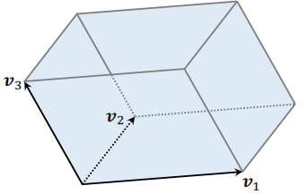
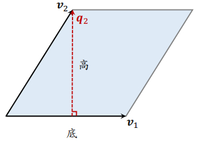

1 推荐系统中的多样性
1.1 物品相似性的度量
可以基于物品属性标签：类目、品牌、关键词……如果两个物品相同的属性标签越多，那么两个物品就越相似。
也可以使用基于物品的向量表征，用召回的双塔模型学到的物品向量表征效果不太好，但是使用基于内容的向量表征效果比较好，也就是使用 CV 和 NLP 模型提取图片和文字的特征向量。
1.2 基于物品属性标签
物品属性标签通常是 CV 和 NLP 算法根据物品内容推断出的，不一定准确，可以根据一级类目、二级类目、品牌等标签计算相似度。例如有两个物品：
- 物品 i：美妆、彩妆、香奈儿
- 物品 j：美妆、香水、香奈儿
则相似度为 sim_1(i,j)=1,sim_2(i,j)=0,sim_3(i,j)=1，对三个分数求加权和，即可得到相似度的总分，其中的权重需要根据经验设置。
1.3 基于向量表征计算相似度
双塔模型的两个塔分别把用户特征和物品特征映射成向量，记作 a 和 b，两个向量的余弦相似度 cos(a,b) 记作用户对物品的兴趣。
在多样性问题上，我们只需要物品塔的输出，物品塔把每个物品表征为一个向量 b，如果两个物品相似，则向量表征的内积相似度比较大，或者余弦相似度比较大。
把物品塔学习到的物品表征用在多样性问题上是可以的，但是效果一般，原因是推荐系统中的头部现象很严重，曝光和点击都集中在少数物品，新物品和长尾物品的曝光和点击都很少，双塔模型学不好它们的向量表征。
1.4 基于图文内容的物品表征
在多样性问题上，最好的办法还是基于图文内容的向量表征。分别使用 CNN 和 BERT 对图片和文本内容进行处理，得到两个向量。
但是如何训练这两个模型呢？CLIP 是当前公认最有效的预训练⽅法。
- 思想： 对于图片—文本二元组，预测图文是否匹配
- **优势：**无需人工标注。小红书的笔记天然包含图片+文字，大部分笔记图文相关
做训练的时候，同一个笔记的图片和文字作为正样本，图片的向量和文字的向量应该高度相似，如果图片和文字来自不同的笔记，那么可以当作负样本。可以使用 batch 内负样本，一个 batch 内有 m 对正样本，一张图片和 m−1 条文本组成负样本，则这个 batch 内一共有 m(m−1) 对负样本。
1.5 提升多样性的方法
推荐系统的链路
粗排和精排用多目标模型对物品做 pointwise 打分，而不用考虑物品之间的关联。对于物品 i，模型输出点击率、交互率的预估，融合成分数 rewardi。
rewardi 表示用户对物品 i 的兴趣，在排序中，rewardi 是物品本⾝对用户的价值。
给定 n 个候选物品，排序模型打分，得到：
reward_1,reward_2,⋯,reward_n
对于粗排，n 为几千；对于精排，n 为几百。后处理的主要作用是提高多样性，需要从 n 个候选物品中选出 k 个，既要它们的总分高，也需要它们有多样性。如果不考虑多样性，那么只需要根据 rewardi 对 n 个物品排序选出 TopK。在实践中，增加物品的多样性有利于增加指标。
精排的后处理被称为重排，粗排后也需要多样性算法。
2 MMR
2.1 原理
MMR（Maximal Marginal Relevance）搜索的结果主要就是根据相关性做排序，MMR 是先被用到搜索排序，后被用到推荐排序。
精排给 n 个候选物品打分，融合之后的分数为：
reward_1,reward_2,⋯,reward_n
精排中 n 的大小通常是几百，把第 i 和 j 个物品的相似度记作 sim(i,j)，可以是用物品标签计算出的，也可以是用向量表征计算出的。在精排的后处理阶段也就是重排，需要从 n 个候选物品中选出 k 个，选出的物品既要有高精排分数，也要有多样性。
下面介绍 MMR 多样性算法，下图中左边的物品是选中的物品，右边是未选中的物品。
计算集合 ℛ 中每个物品 i 的 Marginal Relevance 分数，也就是给未选中的物品打分：
MR_i=θ⋅reward_i−(1−θ)⋅j∈Smaxsim(i,j)
MR 由两项组成：
- rewardi 表示物品 i 的精排分数
- maxi∈Ssim(i,j) 表示物品 i 的多样性分数，计算 i 与 j 的相似度，再关于 j 求最大化，这样可以衡量 i 与集合 S 的相似度
- θ 越大，则物品价值对排序的影响越大；反之越小，则对排序的影响越小
MMR 就是对 MR 分数求最大化，对于所有未选中的物品 i，计算出它的 MRi，并选出分数最高的物品：
i∈RargmaxMRi
每一轮都需要计算出集合 R 中所有物品的分数，然后选出分数最高的物品，把这个物品从集合 R 移动到集合 S。
2.2 总结
总体步骤如下：
- 选中的物品 S 初始化为空集，未选中的物品 ℛ 初始化为全集 {1,⋯,n}。
- 选择精排分数 rewardi 最高的物品，从集合 ℛ 移到 S。
- 做 k−1 轮循环：
- 计算集合 ℛ 中所有物品的分数 MR_ii∈R。
- 选出分数最高的物品，将其从 ℛ 移到 S。
2.3 滑动窗口
MMR:i∈Rargmaxθ⋅reward_i−(1−θ)⋅j∈Smaxsim(i,j)
使用上述公式存在的问题：已选中的物品越多（即集合 S 越大），越难找出物品 i∈R，使得 i 与 S 中的物品都不相似。设 sim 的取值范围是 [0,1]。当 S 很大时，多样性分数 maxj∈Ssim(i,j) 总是约等于 1，导致 MMR 算法失效。
**解决方案是使用滑动窗口：**设置一个滑动窗口 W，比如最近选中的 10 个物品，用 W 代替 MMR 公式中的 S，这样就可以解决上述问题。
改进后的公式如下，上面的公式用集合 S，下面的公式用集合 W。

工业界实际的重排都是用滑动窗口。
3 重排的规则
规则：最多连续出现 k 篇某种笔记
小红书推荐系统的物品分为图文笔记、视频笔记。最多连续出现 k=5 篇图文笔记，最多连续出现 k=5 篇视频笔记。如果排 i 到 i+4 的全都是图文笔记，那么排在 i+5 的必须是视频笔记。
规则：每 k 篇笔记最多出现 1 篇某种笔记
运营推广笔记的精排分会乘以大于 1 的系数（boost），帮助笔记获得更多曝光。为了防⽌ boost 影响体验，限制每 k=9 篇笔记最多出现 1 篇运营推广笔记。如果排第 i 位的是运营推广笔记，那么排 i+1 到 i+8 的不能是运营推广笔记。
规则：前 t 篇笔记最多出现 k 篇某种笔记
排名前 t 篇笔记最容易被看到，对用户体验最重要（小红书的 top 4 为⾸屏）。小红书推荐系统有带电商卡片的笔记，过多可能会影响体验。
- 前 t=1 篇笔记最多出现 k=0 篇带电商卡片的笔记
- 前 t=4 篇笔记最多出现 k=1 篇带电商卡片的笔记
MMR 每一轮选出一个物品：
工业界推荐系统在做重排的时候需要结合 MMR 与规则，在满⾜规则的前提下最大化 MR。每一轮先用规则排除掉 R 中的部分物品，得到⼦集 R′。MMR 公式中的 R 替换成⼦集 R′，选中的物品符合规则。
4 DPP 数学基础
4.1 超平面体
2 维空间的超平行体为平行四边形，平行四边形中的点可以表示为：
x=α_1v_1+α_2v_2
- 系数 α1 和 α2 的取值范围是 [0,1]
3 维空间的超平行体为平行六面体，平行六面体中的点可以表示为：
x=α_1v_1+α_2v_2+α_3v_3

一组向量 v_1,⋯,v_k∈Rd 可以确定一个 k 维超平行体：
P(v_1,⋯,v_k)=α1v_1+⋯+αkv_k∣0≤α1,⋯,αk≤1
要求 k≤d，比如 d=3 维空间中有 k=2 维平行四边形。如果 v1,⋯,vk 线性相关，则体积 vol(P)=0。例如，有 k=3 个向量，落在一个平面上，则平行六面体的体积为 0。
4.2 如何衡量物品多样性
平行四边形的面积

计算公式如下，即以 v1 为底，计算高 q2，两个向量必须正交。
面积=∥底∥∥∥_2×∥∥∥高∥_2
以 v1 为底，如何计算高 q2？首先计算 v2 在 v1 上的投影：
Proj_v_1(v_2)=∥∥∥v_1∥∥∥_22v_1Tv_2⋅v_1
然后 q_2=v_2−Proj_v_1(v_2)，此时底 v1 与高 q2 正交。
给定 k 个物品，把它们表征为单位向量 v_1,⋯,v_k∈Rd(d≥k)。用超平行体的体积衡量物品的多样性，体积介于 0 和 1 之间。
- 如果 v1,⋯,vk 两两正交（多样性好），则体积最大化 vol=1
- 如果 v1,⋯,vk 线性相关（多样性差），则体积最小化 vol=0
把上述单位向量 v1,⋯,vk∈Rd 作为矩阵 V∈Rd×k 的列，设 d≥k，则行列式与体积满足：
det(VTV)=vol(P(v_1,⋯,v_k))2
因此可以用行列式 det(VTV) 衡量向量 v1,⋯,vk 的多样性。
5 DPP 多样性算法
5.1 多样性问题
精排给 n 个候选物品打分为 reward_1,⋯,reward_n 表示物品的价值，n 个物品的向量表征为 v_1,⋯,v_n∈Rd，之后从 n 个物品中选出 k 个物品，组成集合 S，做选择要考虑两个因素：
- **价值大：**分数之和 ∑j∈Sreward_j 越大越好
- 多样性好：S 中 k 个向量组成的超平形体 P(S) 的体积越大越好，体积越大，多样性越好
集合 S 中的 k 个物品的向量作为列，组成矩阵 VS∈Rd×k。以这 k 个向量作为边，组成超平形体 P(S)。体积 vol(P(S)) 可以衡量 S 中物品的多样性。
设 $k \leq d $，行列式与体积满⾜：
det(V_STV_S)=vol(P(S))2
5.2 行列式点过程
DPP 是一种传统的统计机器学习⽅法：
S:∣S∣=kargmaxlogdet(V_STV_S)
Hulu 的论文（Fast greedy map inference for determinantal point process to improve recommendation diversity）将 DPP 应用在推荐系统：
S:∣S∣=kargmaxθ⋅⎝⎜⎛j∈S∑reward_j⎠⎟⎞+(1−θ)⋅logdet(V_STV_S)
把上面 V_STV_S 记作 AS，它的大小是 k×k，则上述公式可以替换成下面这种形式：
S:∣S∣=kargmaxθ⋅⎝⎜⎛j∈S∑reward_j⎠⎟⎞+(1−θ)⋅logdet(AS)
DPP 是个组合优化问题，从集合 {1,⋯,n} 中选出一个大小为 k 的⼦集 S。用 S 表示已选中的物品，用 R 表示未选中的物品，贪⼼算法求解：
i∈Rargmaxθ⋅reward_i+(1−θ)⋅logdet(A_S∪{i})
A_S∪{i} 表示在矩阵 AS 基础上增加 i 这一行和一列，目的是让增加后的矩阵的行列式尽量大，这样可以保证选出的物品与物品 i 尽量不相似，如果有物品和 i 相似，那么行列式就会接近 0。
5.3 求解 DPP
5.3.1 暴力算法
对于单个 i，计算 AS∪{i} 的行列式需要 O(∣S∣3)时间。对于所有的 i∈R，计算行列式需要时间 O(∣S∣3⋅∣R∣)。
需要求解上式 k 次才能选出 k 个物品。如果暴力计算行列式，那么总时间复杂度为：
O(n2d)+O(∣δ∣3⋅∣R∣⋅k)=O(n2d)+O(nk4)
- O(n2d) 是计算矩阵 A 的时间
- O(nk4) 是计算行列式的时间
n 的量级是几百，k 和 d 的量级都是几十，这个时间复杂度看起来可行，但是由于系统留给多样性算法的时间也就是 10ms 左右，所以太慢了。
5.3.2 Hulu的快速算法
Hulu 的论文设计了一种数值算法，仅需 O(n2d+nk2) 的时间从 n 个物品中选出 k 个物品。
- 给定向量 v_1,⋯,v_n∈Rd，需要 O(n2d) 时间计算 A
- 用 O(nk2) 的时间计算所有的行列式（利用 Cholesky 分解）
Cholesky 分解 Aδ=LLT，其中 L 是下三角矩阵（对角线以上的元素全零）。Cholesky 分解可供计算 AS 的行列式：
- 下三角矩阵 L 的行列式 det(L) 等于 L 对角线元素乘积
- AS 的行列式为 det(A_S)=det(L)2=∏il_ii2
已知 A_δ=LLT，则可以快速求出所有 A_S∪{i} 的 Cholesky 分解，因此可以快速算出所有 AS∪{i} 的行列式。
i∈Rargmaxθ⋅reward_i+(1−θ)logdet(A_S∪{i})
初始时 S 中只有一个物品，AS 是 1×1 的矩阵，之后每一轮循环，基于上一轮算出的 A_δ=LLT，快速求出增加一行一列后的 A_S∪i 的 Cholesky 分解 (∀i∈R)，从⽽求出 logdet(A_S∪i) 。
5.4 DPP 的扩展
5.4.1 滑动窗口
随着集合 S 增大，其中相似物品越来越多，物品向量会趋近线性相关。则行列式 det(AS) 会坍缩到零，对数趋于负无穷，此时 DPP 就失效了。
用滑动窗口 W 代替集合 S，只考虑最近选中的一批物品，不考虑很久之前的物品。
5.4.2 规则约束
贪⼼算法每轮从 R 中选出一个物品：
i∈Rargmaxθ⋅reward_i+(1−θ)⋅logdet(A_W∪i)
实际的推荐系统中有很多规则约束，例如最多连续出 5 篇视频笔记（如果已经连续出了 5 篇视频笔记，下一篇必须是图文笔记）。由于存在这些规则，算法不能从集合 R 中选择物品，只能从符合规则约束的物品中进行选择。
首先用规则排除掉 R 中的部分物品，得到⼦集 R′，然后求解下面的公式：
i∈R′argmaxθ⋅reward_i+(1−θ)⋅logdet(A_W∪i)

 微信
微信 支付宝
支付宝